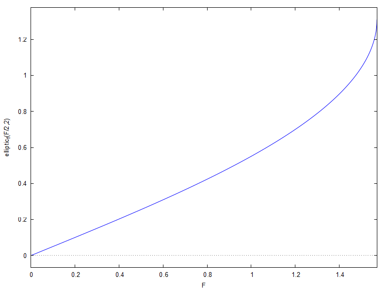
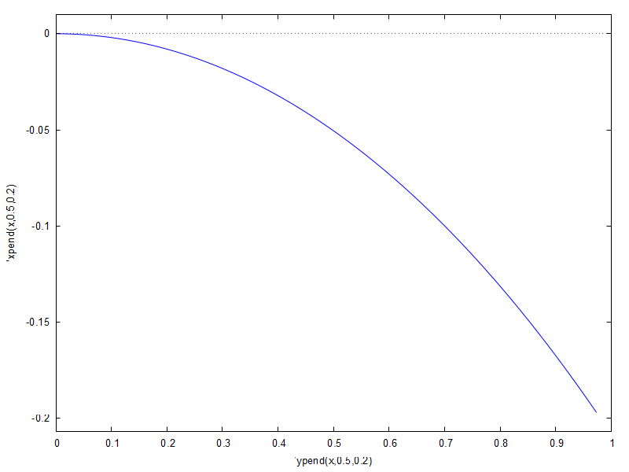
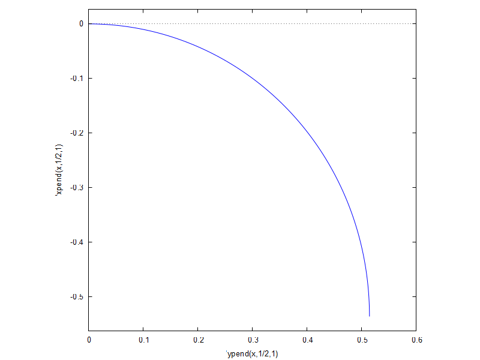

\( \DeclareMathOperator{\abs}{abs} \newcommand{\ensuremath}[1]{\mbox{$#1$}} \)
| (%i1) | load ( "elliptic2.mac" ) ; |
\[\]\[\mbox{}\\\mbox{%default defmatch: }{{\sin{\left( \ensuremath{\mathrm{\% a}}\, \ensuremath{\mathrm{\% x}}\right) }}^{2}} \ensuremath{\mathrm{\% m}}\mbox{%default will be matched uniquely since sub-parts would otherwise be ambiguous. }\]\[\mbox{}\\\mbox{%default defmatch: }\operatorname{-}\left( {{\operatorname{jacobi\_ sn}\left( \ensuremath{\mathrm{\% x}}\operatorname{,}\ensuremath{\mathrm{\% m}}\right) }^{2}} \ensuremath{\mathrm{\% n}} 1\right) \mbox{%default will be matched uniquely since sub-parts would otherwise be ambiguous.}\]
\[\operatorname{ }"elliptic2.mac"\]
| (%i2) |
jaceps
(
x
,
m
)
:
=
block
(
[
u
,
fr
:
1
,
pp
:
0
]
,
if not numerp ( x ) then return ( ' jaceps ( x , m ) ) , pp : first ( quad_qag ( jacobi_dn ( u , m ) ^ 2 , u , 0 , x , 3 , ' epsrel = 1d - 8 ) ) , float ( fr * pp ) ) ; |
\[\operatorname{ }\operatorname{jaceps}\left( x\operatorname{,}m\right) \operatorname{:=}\]
| (%i3) | depends ( F , x ) ; |
\[\operatorname{ }\left[ \operatorname{F}(x)\right] \]
| (%i4) | eq2 : diff ( F , x , 2 ) + F_y * sin ( F ) = 0 ; |
\[\operatorname{(eq2) }\sin{(F)} {F_y}\operatorname{+}\frac{{{d}^{2}}}{d {{x}^{2}}} F\operatorname{=}0\]
| (%i5) | eq1 : 1 / 2 * diff ( ( F ) , x ) ^ 2 - F_y * cos ( F ) = H ; |
\[\operatorname{(eq1) }\frac{{{\left( \frac{d}{d x} F\right) }^{2}}}{2}\operatorname{-}\cos{(F)} {F_y}\operatorname{=}H\]
| (%i6) | sol1 : solve ( eq1 , ( ' diff ( F , x , 1 ) ) ) ; |
\[\operatorname{(sol1) }\left[ \frac{d}{d x} F\operatorname{=}\operatorname{-}\left( \sqrt{2} \sqrt{H\operatorname{+}\cos{(F)} {F_y}}\right) \operatorname{,}\frac{d}{d x} F\operatorname{=}\sqrt{2} \sqrt{H\operatorname{+}\cos{(F)} {F_y}}\right] \]
| (%i7) | sol3 : ode2 ( sol1 [ 2 ] , F , x ) ; |
\[\operatorname{(sol3) }\frac{\int {\left. \frac{1}{\sqrt{H\operatorname{+}\cos{(F)} {F_y}}}dF\right.}}{\sqrt{2}}\operatorname{=}x\operatorname{+}\ensuremath{\mathrm{\% c}}\]
| (%i8) | sol3 : sol3 , factor ; |
\[\operatorname{(sol3) }\frac{\int {\left. \frac{1}{\sqrt{H\operatorname{+}\cos{(F)} {F_y}}}dF\right.}}{\sqrt{2}}\operatorname{=}x\operatorname{+}\ensuremath{\mathrm{\% c}}\]
| (%i9) | sol31 : subst ( cos ( F ) = 1 - 2 * sin ( F / 2 ) ^ 2 , sol3 ) ; |
\[\operatorname{(sol31) }\frac{\int {\left. \frac{1}{\sqrt{H\operatorname{+}\left( 1\operatorname{-}2 {{\sin{\left( \frac{F}{2}\right) }}^{2}}\right) {F_y}}}dF\right.}}{\sqrt{2}}\operatorname{=}x\operatorname{+}\ensuremath{\mathrm{\% c}}\]
| (%i10) | I1 : lhs ( sol31 ) ; |
\[\operatorname{(I1) }\frac{\int {\left. \frac{1}{\sqrt{H\operatorname{+}\left( 1\operatorname{-}2 {{\sin{\left( \frac{F}{2}\right) }}^{2}}\right) {F_y}}}dF\right.}}{\sqrt{2}}\]
| (%i11) | sol2 : elinti ( I1 , F ) = rhs ( sol31 ) ; |
\[\operatorname{(sol2) }\frac{\sqrt{2} \operatorname{elliptic\_ f}\left( \frac{F}{2}\operatorname{,}\frac{2 {F_y}}{H\operatorname{+}{F_y}}\right) }{\sqrt{H\operatorname{+}{F_y}}}\operatorname{=}x\operatorname{+}\ensuremath{\mathrm{\% c}}\]
| (%i12) | sol2 : sol2 , factor ; |
\[\operatorname{(sol2) }\frac{\sqrt{2} \operatorname{elliptic\_ f}\left( \frac{F}{2}\operatorname{,}\frac{2 {F_y}}{H\operatorname{+}{F_y}}\right) }{\sqrt{H\operatorname{+}{F_y}}}\operatorname{=}x\operatorname{+}\ensuremath{\mathrm{\% c}}\]
| (%i13) | sol3a : ode2 ( eq2 , F , x ) ; |
\[\operatorname{(sol3a) }\left[ \operatorname{-}\left( \frac{\int {\left. \frac{1}{\sqrt{\cos{(F)} {F_y}\operatorname{-}\ensuremath{\mathrm{\% k1}} {F_y}}}dF\right.}}{\sqrt{2}}\right) \operatorname{=}x\operatorname{+}\ensuremath{\mathrm{\% k2}}\operatorname{,}\frac{\int {\left. \frac{1}{\sqrt{\cos{(F)} {F_y}\operatorname{-}\ensuremath{\mathrm{\% k1}} {F_y}}}dF\right.}}{\sqrt{2}}\operatorname{=}x\operatorname{+}\ensuremath{\mathrm{\% k2}}\right] \]
| (%i14) | sol31a : subst ( cos ( F ) = 1 - 2 * sin ( F / 2 ) ^ 2 , sol3a [ 2 ] ) ; |
\[\operatorname{(sol31a) }\frac{\int {\left. \frac{1}{\sqrt{\left( 1\operatorname{-}2 {{\sin{\left( \frac{F}{2}\right) }}^{2}}\right) {F_y}\operatorname{-}\ensuremath{\mathrm{\% k1}} {F_y}}}dF\right.}}{\sqrt{2}}\operatorname{=}x\operatorname{+}\ensuremath{\mathrm{\% k2}}\]
| (%i15) | I1a : lhs ( sol31a ) ; |
\[\operatorname{(I1a) }\frac{\int {\left. \frac{1}{\sqrt{\left( 1\operatorname{-}2 {{\sin{\left( \frac{F}{2}\right) }}^{2}}\right) {F_y}\operatorname{-}\ensuremath{\mathrm{\% k1}} {F_y}}}dF\right.}}{\sqrt{2}}\]
| (%i16) | sol2a : elinti ( I1a , F ) = rhs ( sol31a ) ; |
\[\operatorname{(sol2a) }\frac{\sqrt{2} \operatorname{elliptic\_ f}\left( \frac{F}{2}\operatorname{,}\frac{2 {F_y}}{{F_y}\operatorname{-}\ensuremath{\mathrm{\% k1}} {F_y}}\right) }{\sqrt{{F_y}\operatorname{-}\ensuremath{\mathrm{\% k1}} {F_y}}}\operatorname{=}x\operatorname{+}\ensuremath{\mathrm{\% k2}}\]
| (%i17) | sol2a : sol2a , factor ; |
\[\operatorname{(sol2a) }\frac{\sqrt{2} \operatorname{elliptic\_ f}\left( \frac{F}{2}\operatorname{,}\operatorname{-}\left( \frac{2}{\ensuremath{\mathrm{\% k1}}\operatorname{-}1}\right) \right) }{\sqrt{\operatorname{-}\left( \left( \ensuremath{\mathrm{\% k1}}\operatorname{-}1\right) {F_y}\right) }}\operatorname{=}x\operatorname{+}\ensuremath{\mathrm{\% k2}}\]
| (%i18) | sol2 ; |
\[\operatorname{ }\frac{\sqrt{2} \operatorname{elliptic\_ f}\left( \frac{F}{2}\operatorname{,}\frac{2 {F_y}}{H\operatorname{+}{F_y}}\right) }{\sqrt{H\operatorname{+}{F_y}}}\operatorname{=}x\operatorname{+}\ensuremath{\mathrm{\% c}}\]
| (%i19) | solve ( - ( 2 / ( %k1 - 1 ) ) = ( 2 * F_y ) / ( H + F_y ) , %k1 ) ; |
\[\operatorname{ }\left[ \ensuremath{\mathrm{\% k1}}\operatorname{=}\operatorname{-}\left( \frac{H}{{F_y}}\right) \right] \]
| (%i20) | sol2 , F_y = 0 ; |
\[\operatorname{ }\frac{F}{\sqrt{2} \sqrt{H}}\operatorname{=}x\operatorname{+}\ensuremath{\mathrm{\% c}}\]
| (%i21) | wxplot2d ( [ elliptic_f ( F / 2 , 2 ) ] , [ F , 0 , %pi / 2 ] ) $ |
\[\operatorname{ }\]

| (%i22) | assume ( m > 0 ) ; |
\[\operatorname{ }\left[ m\operatorname{> }0\right] \]
| (%i23) | tsol : 2 * asin ( sqrt ( m ) * jacobi_sn ( s , m ) ) ; |
\[\operatorname{(tsol) }2 \operatorname{asin}\left( \sqrt{m} \operatorname{jacobi\_ sn}\left( s\operatorname{,}m\right) \right) \]
| (%i24) | diff ( E ( x * q , m ) , x ) ; |
\[\operatorname{ }q {{\operatorname{jacobi\_ dn}\left( q x\operatorname{,}m\right) }^{2}}\]
| (%i25) | I : ' integrate ( jacobi_cn ( u * q , m ) * jacobi_sn ( u * q , m ) , u , 0 , s ) ; |
\[\operatorname{(I) }\int_{0}^{s}{\left. \operatorname{jacobi\_ cn}\left( q u\operatorname{,}m\right) \operatorname{jacobi\_ sn}\left( q u\operatorname{,}m\right) du\right.}\]
| (%i26) | I1 : changevar ( I , y = u * q , y , u ) ; |
\[\operatorname{(I1) }\frac{\int_{0}^{q s}{\left. \operatorname{jacobi\_ cn}\left( y\operatorname{,}m\right) \operatorname{jacobi\_ sn}\left( y\operatorname{,}m\right) dy\right.}}{q}\]
| (%i27) | sol11 : intelipt2 ( I1 , jacobi_dn ( q * s , m ) , s ) ; |
\[\operatorname{(sol11) }\operatorname{-}\left( \frac{\operatorname{jacobi\_ dn}\left( q s\operatorname{,}m\right) }{m q}\right) \]
| (%i28) | diff ( I1 - sol11 , s ) ; |
\[\operatorname{ }0\]
| (%i29) | I2 : ' integrate ( 2 * jacobi_cn ( q * s , m ) ^ 2 - 1 , s ) ; |
\[\operatorname{(I2) }\int {\left. 2 {{\operatorname{jacobi\_ cn}\left( q s\operatorname{,}m\right) }^{2}}\operatorname{-}1ds\right.}\]
| (%i30) | sol121 : intelipt3 ( I2 , 2 * E ( s * q , m ) , s ) ; |
\[\operatorname{(sol121) }\frac{2 \operatorname{E}\left( q s\operatorname{,}m\right) }{m q}\operatorname{+}\frac{\left( m\operatorname{-}2\right) s}{m}\]
| (%i31) | K2 : elliptic_f ( %pi / 4 , 1 / 2 ) , numer , float ; |
\[\operatorname{(K2) }0.826017876249245\]
| (%i32) | E2 : elliptic_e ( %pi / 4 , 1 / 2 ) * 4 , numer , float ; |
\[\operatorname{(E2) }2.992746016710645\]
| (%i33) | xpend ( s , m , q ) : = 2 * ( jacobi_dn ( q * s , m ) - 1 ) / ( m * q ) ; |
\[\operatorname{ }\operatorname{xpend}\left( s\operatorname{,}m\operatorname{,}q\right) \operatorname{:=}\frac{2 \left( \operatorname{jacobi\_ dn}\left( q s\operatorname{,}m\right) \operatorname{-}1\right) }{m q}\]
| (%i34) | ypend ( s , m , q ) : = ( 2 * jaceps ( q * s , m ) ) / ( m * q ) + ( ( m - 2 ) * s ) / m ; |
\[\operatorname{ }\operatorname{ypend}\left( s\operatorname{,}m\operatorname{,}q\right) \operatorname{:=}\frac{2 \operatorname{jaceps}\left( q s\operatorname{,}m\right) }{m q}\operatorname{+}\frac{\left( m\operatorname{-}2\right) s}{m}\]
| (%i35) | ypend1 ( s , m , q ) : = ( 2 * jaceps ( q * s , m ) ) / ( m * q ) ; |
\[\operatorname{ }\operatorname{ypend1}\left( s\operatorname{,}m\operatorname{,}q\right) \operatorname{:=}\frac{2 \operatorname{jaceps}\left( q s\operatorname{,}m\right) }{m q}\]
| (%i36) | ypend ( K2 , 1 / 2 , 1 ) ; |
\[\operatorname{ }0.5146923879629095\]
| (%i37) | ypend1 ( K2 , 1 / 2 , 1 ) ; |
\[\operatorname{ }2.9927460167106448\]
| (%i38) | wxplot2d ( [ parametric , ' ypend ( x , 0 . 5 , 0 . 2 ) , ' xpend ( x , 0 . 5 , 0 . 2 ) , [ x , 0 , 1 ] ] ) $ |
\[\operatorname{ }\]

| (%i39) | K3 : elliptic_f ( %pi / 4 , 2 ) , numer , float ; |
\[\operatorname{(K3) }1.3110287771460598\]
| (%i40) | xpend ( K3 , 2 , 1 ) ; |
\[\operatorname{ }\operatorname{-}0.9999999999999999\]
| (%i41) | ypend ( K3 , 2 , 1 ) ; |
\[\operatorname{ }0.599070117367796\]
| (%i42) | wxplot2d ( [ parametric , ' ypend ( x , 1 / 2 , 1 ) , ' xpend ( x , 1 / 2 , 1 ) , [ x , 0 , K2 ] ] , same_xy ) $ |
\[\operatorname{ }\]

Created with wxMaxima.
The source of this Maxima session can be downloaded here.